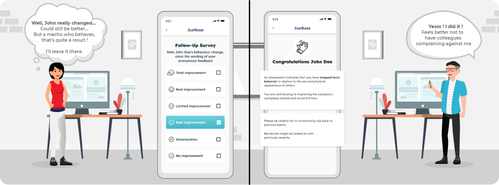

Most mild everyday toxic behaviors arise from bad or outdated habits and not ill-intent. Most employees don't rebuke a toxic behaving colleague, for fear of ridicule or retaliation.
The Employee Console on a mobile app enables employees to fearlessly:
Automated shields protect against anonymity abuse

A simple feedback from a colleague is often enough to make an employee aware of their slightly toxic behavior or bad habit.
In addition, anonymity gives the sender of the feedback a sense of security against ridicule or retaliation (with our Shield Against Anonymity Abuse ).
Feedback can be scheduled to be sent only when two other employees have submitted feedback for the same colleague.
This reassures senders that they are not alone.
The sender can revert to individual feedback if they don't want to wait any longer


A documented feedback is often enough for employees to realize their involuntary toxicity.

A documented feedback is often enough for employees to realize their involuntary toxicity.
Being allowed to respond to a feedback contributes to the receiver's cognitive receptivity.
Using a 0-9 scale reduces the risk of knee-jerk denial
(Our Automated Shields will prevent abuse)

"Eyes Reading" Empathy Training Cognitive Interactive Game
Based on research from Cambridge U.(UK) and MIT; Improves neurocognitive perception of others' emotions
Inclusion and behavior self-improvement interactive games

A follow-up survey with the sender of the feedback reveals whether the recipient has improved and allows the case to be closed.
Some contributors are really inclusive, motivating, and respectful.
They can be examples for colleagues
Being recognized by colleagues will encourage and
motivate them

Anonymizing reports to HR reduces underreporting of toxicity (while our shields protect against abuse of anonymity).
One of the main causes of under-reporting of toxic behavior to HR is the fear of lack of confidentiality and resulting consequences (62% of reporters had negative outcome, vs. 26% negative outcome for wrongdoer),
JustEase's answer: Two levels of protection: Anonymized and grouped reports to HR.
Workplace Bullying Institute 2021 Survey

If the follow-up report shows that the toxic employee hasn't changed after receiving an
anonymous toxicity report,
the sender can easily convert their well-documented anonymized feedback into an anonymized
toxicity report for HR.
Report can be scheduled to be sent only when two other employees have submitted reports for the same colleague.
This reassures senders that they are not alone.
The sender can revert to individual report if they don't want to wait any longer


No more HR nightmare of "his word against hers"!
Toxicity leaves a trail. JustEase app offers the following features, even to the less tech-savvy:
Action of bystanders has proven to be efficient.
(Harvard Business Review may 2020)A bystander can either directly send an anonymized feedback to a colleague or an anonymized report to HR.
OR offers to join the victim if they decide to send a feedback or a report.
An offer of help from a bystander could encourage the victim to speak up
Anonymity protects senders of feedbacks or reports;
while our Shields protect their colleagues or HR from potential abuse of anonymity, by denying the abuser access to anonymity features.

While always providing a safety fall-back solution to the temporarily blocked sender.
Definition of serial sender:
An employee who abusively sends multiple feedbacks
to the same or multiple colleagues.

In both situations, the employee cannot send any more feedbacks for 3 months.
But the employee can report to HR anonymously or non-anonymously, if they feel surrounded by abusive colleagues.
A contributor sends feedbacks to 4 colleagues within 2 months.
Being several to send abusive feedbacks to someone could seem to guarantee impunity
It Can Be Either:
Several colleagues sending feedback to the same employee could mean one of two situations
Both situations need HR intervention. HR is automatically alerted and they can easily and discreetly gauge this employee’s work environment toxicity using the “Targeted Toxicity Survey” feature.
A contributor received feedbacks from
4 colleagues or more within
2 months
Sending a fake anonymized report to HR might seem tempting and guaranteeing
impunity.
But the app. gives tools to HR to investigate (Short local toxicity survey, Anonymized chat with
reporter...)
...and to sanction abuse by temporarily blocking abuser's access to anonymized
features.
But not their access to non-anonymized complain to HR.
In rare cases, blocking an employee's anonymized reporting for 6 months might not be enough .
HR BP can then suspend their access to anonymized features for a year.
But the employee keeps the option to send a complaint (not anonymized) to HR.